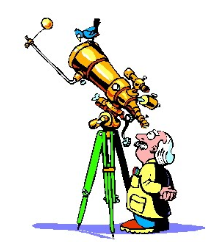
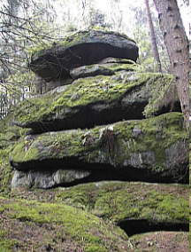
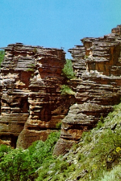
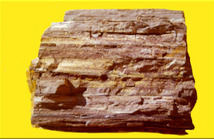

Capítulo 5
Astronomia e geologia na indústria petrolífera
Astronomia é a ciência que estuda o universo, numa tentativa de perceber a sua estrutura e evolução. A Geologia é a ciência que estuda a história e evolução do planeta Terra. O estudo do céu ajudou o ser humano a desenvolver calendários para exercerem suas atividades como: caça, agricultura, navegação, exploração terrestre, etc.
Astronomia: conceitos básicos O Universo conhecido é formado por galáxias, estrelas, nebulosas, planetas, satélites, cometas, asteroides e radiações. É possível que haja, também, matéria numa forma ainda não detectada. O Universo atualmente conhecido tem um raio de cerca de 20 bilhões de anos-luz, contendo cerca de 100 bilhões de galáxias, incluindo a nossa Galáxia, também chamada de Via- 20 Láctea. Admite-se uma idade de cerca de 20 bilhões de anos para o Universo. O estudo da origem e da evolução do Universo recebe o nome de Cosmologia. Sistema Solar O Sistema Solar é constituído pelo conjunto de corpos celestes que orbitam o Sol e que, portanto, estão sob sua influência gravitacional. Dentre esses corpos, os maiores são os planetas, que totalizam oito, seguidos pelos cinco planetas anões, vários satélites naturais e inúmeros outros corpos menores, como asteroides e cometas.
Fonte: http://www.ciencias.seed.pr.gov.br/modules/conteudo/conteudo.php?conteudo=252A evolução da Terra é marcada por muitos eventos extremos e infrequentes, mas que envolvem mudanças rápidas no sistema. O Princípio do Uniformitarismo, proposto no século XVIII pelo médico e geólogo escocês James Hutton, considera que os processos geológicos atuais ocorreram de modo muito semelhante aos que aconteceram ao longo da história evolutiva da Terra. Isso pode ser resumido na frase: “o presente é a chave do passado”. 21 Isso não significa que os fenômenos geológicos ocorram de forma lenta e gradual. Alguns dos eventos mais importantes que aconteceram sobre a Terra aconteceram de forma súbita, como o caso de meteoros que impactaram a Terra, vulcões em erupção, e falhas geológicas que podem rachar o solo num terremoto. Outros eventos ocorrem de forma mais lenta, sendo necessários milhões de anos para acontecer, como a migração de continentes, soerguimento e erosão de montanhas, ou sistemas fluviais depositarem espessas camadas de sedimentos.
Tectônica de placas é uma teoria originada a partir da deriva continental e da expansão dos fundos oceânicos. Foi desenvolvida em 1960, e tornou-se a mais aceita entre geógrafos e oceanógrafos. De acordo com esta teoria, a litosfera se movimenta sobre a astenosfera. A litosfera por sua vez, é dividida por placas (denominadas placas tectônicas) e estas deslizam por causa das correntes de convecção no interior da Terra. O calor que vem do núcleo da Terra esquenta o manto e faz as partes mais quentes subir. Essas partes esfriam e voltam a descer. São essas correntes que movimentam lentamente as placas que formam a crosta da Terra.
Você sabia?
Magmáticas São as rochas formadas pelo resfriamento do magma, são as mais abundantes no planeta. Foram as primeiras a serem formadas a bilhões de anos. Exemplo, granito.
Sedimentares São as rochas que sofrem desgaste com o tempo, pode ser por fenômenos químicos ou físicos. Sofrem desgaste por chuvas, ventos, rios, erosão, ou variação de temperatura. Exemplos: arenito e calcário
Metamórficas São formadas através de transformações de rochas magmáticas e sedimentares. As mudanças estão relacionadas à pressão e temperatura. Exemplos: mármore, xisto, ardósia, gnaisse.
O papel do geólogo em uma empresa de exploração de petróleo é de fundamental importância. Esse profissional atua em várias fases do trabalho de exploração, desde o reconhecimento geológico regional, que envolve mapeamento geológico em várias escalas, às análises geofísicas, geoquímicas, paleontológicas, petrográficas, sedimentológicas e estruturais, todas em escalas macro e microscópicas (em alguns casos, com a realização de análises laboratoriais de altíssima sofisticação e especialização). Após a indicação do local onde o poço deve ser perfurado, durante a fase de perfuração, é o geólogo quem acompanha todo o processo até a finalização do poço. Nessa fase, ele descreve as amostras de rochas que estão sendo atravessadas pela sondagem, coleta essas amostras para diversas análises em laboratório, estando sempre atento ao surgimento súbito e descontrolado de gás e óleo.
Fonte: http://redeglobo.globo.com/globociencia/noticia/2011/12/saiba-como-os-estudos-da-geologia-influenciam-na-industria-petrolifera.html1) Observe a tabela abaixo e responda as questões de a) até g):
| PLANETA | DIÂMETRO EQUATORIAL | PERÍODO DE ROTAÇÃO | PERÍODO DE TRANSLAÇÃO |
| Mercúrio | 4878 km | 58 dias | 88 dias |
| Vênus | 12102 km | 243 dias | 225 dias |
| Terra | 12576 km | 23h54min | 365 dias |
| Marte | 6794 km | 24h6min | 687 dias |
| Júpiter | 142984 km | 9h54min | 12 anos |
| Saturno | 120536 km | 10h23min | 29 anos |
| Urano | 51118 km | 17h52min | 84 anos |
| Netuno | 49492 km | 16h11min | 164 anos |
a) O planeta que demora menos para completar uma volta em torno do sol é____________;
b) O planeta que demora mais para completar a volta em torno do sol é________________;
c) O planeta que possui menos diâmetro equatorial é___________;
d) Marte leva _____________ para completar uma volta em seu próprio eixo;
e) Urano leva __________________para completar uma volta em torno do sol;
f) Vênus demora_________________para fazer uma volta em torno do seu próprio eixo;
g) Saturno demora_______________ para fazer uma volta em torno do sol.
2) Observe a tirinha abaixo e responda as questões a) e b):
a) O personagem se refere às rochas de origem vulcânica. Qual o nome desse tipo de rocha?
b) Como são chamadas as rochas que sofrem transformações originadas por todos os tipos de rochas?
1) a) Mercúrio b) Netuno c) Mercúrio d) 24h6min e) 84 anos f) 243 dias g) 29 anos
2) a) Magmáticas b) Metamórficas